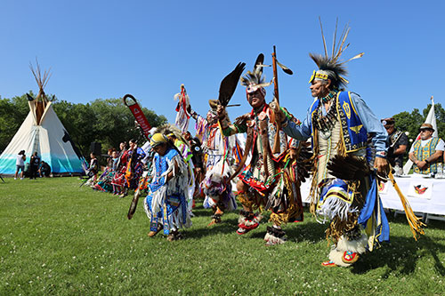

Who We Are
Treaty 1 is more than just a historical agreement. It represents a relationship between Indigenous Nations and the Crown that continues to this day.
The people of Treaty 1 are part of a living community with strong identities, traditions, and connections to the land. The Nations within Treaty 1 territory continue to grow, adapt, and contribute to society while maintaining their cultural values.
Their history did not begin with the treaty, and it does not end with it either.
Understanding Treaty 1 means recognizing the people behind it, not just the document itself.


Communities Involved
Treaty 1 brought together seven First Nations located in what is now southern Manitoba.
In 1871, these communities gathered at Lower Fort Garry to take part in important negotiations with representatives of the Crown. The purpose of these meetings was to reach an agreement on how the land and its resources would be used as more settlers began moving into the region.
For the First Nations, these discussions went far beyond land. They were about protecting their people, securing their future, and preserving their way of life. The negotiations marked an important moment, bringing different communities together to speak directly with government officials about their rights, responsibilities, and expectations moving forward.
Each Nation was represented by its chief, who spoke on behalf of their people during the negotiations. These leaders played a key role in ensuring their communities’ voices, concerns, and interests were clearly expressed throughout the process.
| Community | Chief | English Name |
|---|---|---|
|
Portage Band (Long Plain, Swan Lake, Sandy Bay) |
Oo-za-we-kwun | Yellowquill |
| Peguis | Mis-koo-kee-new | Red Eagle (Henry Prince) |
| Sagkeeng | Ka-ke-ka-penais |
Bird Forever (William Pennefather) |
| Brokenhead | Na-sha-ke-pennais | Flying Down Bird |
| Roseau River | Na-ha-wa-nanan | Centre of Bird’s Tail |
| Ke-we-tay-ash | Flying Ground | |
| Wa-ko-wush | Whip-poor-will |
First Nations Involved
The First Nations involved in Treaty 1 include:
- Brokenhead Ojibway Nation
- Long Plain First Nation
- Peguis First Nation
- Roseau River Anishinaabe First Nation
- Sagkeeng First Nation
- Sandy Bay Ojibway First Nation
- Swan Lake First Nation
These communities continue to exist today and remain closely connected to Treaty 1 territory.

Nations and Identity
Each of the First Nations involved in Treaty 1 has a unique history, culture, and connection to the land.
These nations are part of the Anishinaabe and Ojibway peoples, each with their own languages, traditions, and governance structures. Their identities are deeply tied to their territories, shaping social, political, and cultural life within their communities.
The chiefs at the negotiations represented not only themselves, but the values, beliefs, and priorities of their peoples. They worked to ensure that the treaty would respect their ways of life, including hunting, fishing, and other cultural practices that had sustained their communities for generations.
Even today, the Nations maintain a strong sense of identity tied to Treaty 1 territory. Community events, ceremonies, and local governance continue to reflect long-standing traditions, keeping cultural practices alive and passing them on to future generations.
Understanding the identity of these Nations is essential to appreciating the full significance of Treaty 1. The treaty is more than a legal document; it reflects the resilience, values, and priorities of the people who shaped it and their descendants who continue to uphold their heritage.
Key Terms
Treaty 1 included several important agreements that outlined how both First Nations and the Crown would move forward after the signing. These terms focused on land use, support for communities, and the continuation of traditional ways of life.

Land Agreement
As part of the treaty, First Nations agreed to allow the Crown to use large portions of their traditional territories. This made it possible for the government to expand settlement and develop infrastructure such as roads and railways.
While this agreement allowed expansion, the land itself remained central to First Nations life, continuing to hold cultural, spiritual, and practical importance.
As of May 2022, only about 565,000 acres of 1.1 million promised have been set aside for First Nations. This is 25 years after the agreement was made.
Reserve Lands
The treaty established reserve lands as designated areas for First Nations communities. Each family of five was to receive 160 acres within these lands.
These reserves were intended to provide a stable foundation where communities could organize themselves, maintain local leadership, and build for the future.
However, the reserve system also created challenges, as it confined communities to specific areas and limited their access to traditional territories outside of those reserves. This has had long-term impacts on the social and economic development of Treaty 1 Nations.
Annual Payments
The treaty included yearly payments, known as annuities, for each member of the First Nations. Under Treaty 1, this amount was set at three dollars per person per year.
These payments were part of the ongoing agreement between the Crown and Indigenous communities, representing a continued responsibility rather than a one-time exchange.

Goods and Support
Agricultural Support
The treaty promised tools to those cultivating land, including hoes, spades, axes, scythes, a plough for every ten families, and various saws.
Livestock
The agreement included providing bulls, cows, boars, and sows for the encouragement of agriculture.
Clothing & Items
Chiefs and councillors were promised distinctive clothing (suits) every three years, along with medals and flags.
Outside Promises
Many of these items were not included in the original written document but were orally promised by Commissioner Wemyss Simpson and Governor Archibald to secure signatures from the First Nations leaders; leading to disputes when they were not promptly delivered.
Traditional Practices
The treaty recognized the importance of traditional activities and stated that First Nations could continue practices such as hunting, fishing, and cultural ceremonies. This ensured that their connection to the land and their way of life would continue, even as changes took place around them.
However, this is a complex issue where the oral promises made by the Crown negotiators at the time differ significantly from the original written document, leading to long-standing disputes.

Comparing Treaties
Treaty 1 was the first of the Numbered Treaties signed after Confederation, which is when Canada became a country in 1867. Being one of the earliest agreements, it helped set the framework for how future treaties with Indigenous Nations would be negotiated.
Later treaties were different in several ways. Some included improved terms, expanded promises, or additional benefits based on the experiences learned from earlier agreements. Treaty 1, as the earliest, did not initially include all of these improvements.
Differences in Payments
Under Treaty 1, annual payments to individuals were set at three dollars per person. In contrast, later treaties, such as Treaty 3, Treaty 4, and Treaty 5, included five dollars per person as standard. This demonstrates that Treaty 1 communities initially received less financial support than some Nations in the other treaties.
The original three-dollar payment in Treaty 1 had to be adjusted later to five dollars through government decisions. This change shows the effort required by Treaty 1 communities to achieve parity with later agreements.
Changes in Treaty Terms
Later treaties often included clearer, more detailed, or expanded terms. These refinements were based on lessons from previous negotiations and aimed to provide more precise protections and benefits to the communities involved.
Since Treaty 1 was signed first, it lacked some of these updated conditions, which were included in subsequent treaties.
Geographic and Community Differences
Each numbered treaty covers distinct regions and specific First Nations. Treaty 1 focused on southern Manitoba, while later treaties stretched further west and north into other parts of Canada.
This regional difference influenced what each treaty included, as each was tailored to the specific communities, resources, and local circumstances at the time.
Why These Differences Matter
The differences between Treaty 1 and later treaties illustrate how the relationship between the Crown and Indigenous Nations evolved over time. Some Nations received different benefits depending on when and where their treaty was signed.
Recognizing these distinctions is important today for understanding treaty rights, fairness, and the historical context of Indigenous-Crown agreements.